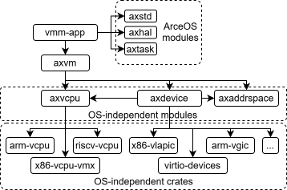

AxVisor: Virtual Machine Monitor based on ArceOS
axvisor: acts like a VMM (Virtual Machine Monitor), built and run as an ArceOS unikernel app.

As shown in the dependency figure, it provides a global perspective of Hypervisor resource management, serving as a bridge that connects the core functional components of the ArceOS with virtualization-related components.
On one hand, it directly relies on the axstd library provided by ArceOS, invoking core functionalities from arceos. Some direct dependencies includes:
- axtask based vCpu management and scheduling
- axhal for platform-specific operations and interrupt handling
- axconfig for platform configuration
On the other hand, it depends on axvm to implement VM management (configuration & runtime), encompassing:
- CRUD operations for guest VMs
- VM lifecycle control: setup, boot, notification and shutdown
- Hypercall handling for communication between hypervisor and guest VMs
VM management
- hypercall handler
- GLOBAL_VM_LIST
vCPU scheduling based on axtask
axvcpu is just and only reponsible virtualization function support, e.g. enter/exit guest VM through vmlaunch/vmexit.
Since ArceOS already provides axtask for runtime control flow mangement under single privilege level, we can reuse its scheduler and evolve with it.
During VM booting&setup process, axvisor allocates axtask for each vcpu, set the task's entry function to [vcpu_run()],
it alse initializes the CPU mask if the vCPU has a dedicated physical CPU set.
vcpu_run()
The vcpu_run() function is the main routine for vCPU task, which can be concluded like:
#![allow(unused)] fn main() { fn vcpu_run() { let curr = axtask::current(); let vm = curr.task_ext().vm.clone(); let vcpu = curr.task_ext().vcpu.clone(); loop { match vm.run_vcpu(vcpu_id) { // match vcpu.run() { Ok(exit_reason) => match exit_reason { AxVCpuExitReason::Hypercall { nr, args } => {} } AxVCpuExitReason::ExternalInterrupt { vector } => { // Irq injection logic } AxVCpuExitReason::Halt => { wait(vm_id) } AxVCpuExitReason::Nothing => {} AxVCpuExitReason::CpuDown { _state } => { // Sleep target axtask. } AxVCpuExitReason::CpuUp { target_cpu, entry_point, arg, } => { // Spawn axtask for target vCpu. vcpu_on(vm.clone(), target_cpu as _, entry_point, arg as _); vcpu.set_gpr(0, 0); } AxVCpuExitReason::SystemDown => {} _ => { warn!("Unhandled VM-Exit"); } }, Err(err) => {} } } } }
Task Extension
This mechanism allows callers to customize extension fields of the axtask struct without modifying its source code,
(a lightweight mechanism similar to Thread-Local Storage (TLS)).
Base fields of axtask:
- Essential information required for task execution, such as function call context, stack pointers, and other runtime metadata.
Usage scenarios
- Extension for monolithic kernel
- Process metadata (e.g., PID)
- Memory management informations like page table
- Resource management including fd table
- ...
- Extension for hypervisor
- vCPU state
- Metadata of the associated VM
- ...
Task Extension Design
- introduce
task_ext_ptras extension field - leverage pointer-based access to achieve memory access performance comparable to native struct fields
- determine extension field size at compile-time through def_task_ext
- allocate memory on the heap, set the extension field pointer
task_ext_ptrto this memory block - expose reference APIs for external access
- initialized by
init_task_ext
#![allow(unused)] fn main() { // arceos/modules/axtask/src/task_ext.rs #[unsafe(no_mangle)] static __AX_TASK_EXT_SIZE: usize = ::core::mem::size_of::<TaskExt>(); #[unsafe(no_mangle)] static __AX_TASK_EXT_ALIGN: usize = ::core::mem::align_of::<TaskExt>(); pub trait TaskExtRef<T: Sized> { /// Get a reference to the task extended data. fn task_ext(&self) -> &T; } impl ::axtask::TaskExtRef<TaskExt> for ::axtask::TaskInner { fn task_ext(&self) -> &TaskExt { unsafe { let ptr = self.task_ext_ptr() as *const TaskExt; if !!ptr.is_null() { ::core::panicking::panic("assertion failed: !ptr.is_null()") }; &*ptr } } } // arceos/modules/axtask/src/task.rs impl TaskInner { /// Returns the pointer to the user-defined task extended data. /// /// # Safety /// /// The caller should not access the pointer directly, use [`TaskExtRef::task_ext`] /// or [`TaskExtMut::task_ext_mut`] instead. /// /// [`TaskExtRef::task_ext`]: crate::task_ext::TaskExtRef::task_ext /// [`TaskExtMut::task_ext_mut`]: crate::task_ext::TaskExtMut::task_ext_mut pub unsafe fn task_ext_ptr(&self) -> *mut u8 { self.task_ext.as_ptr() } /// Initialize the user-defined task extended data. /// /// Returns a reference to the task extended data if it has not been /// initialized yet (empty), otherwise returns [`None`]. pub fn init_task_ext<T: Sized>(&mut self, data: T) -> Option<&T> { if self.task_ext.is_empty() { self.task_ext.write(data).map(|data| &*data) } else { None } } } }
TaskExt in axvisor
#![allow(unused)] fn main() { // axvisor/src/task.rs use std::os::arceos::modules::axtask::def_task_ext; use crate::vmm::{VCpuRef, VMRef}; /// Task extended data for the hypervisor. pub struct TaskExt { /// The VM. pub vm: VMRef, /// The virtual memory address space. pub vcpu: VCpuRef, } impl TaskExt { pub const fn new(vm: VMRef, vcpu: VCpuRef) -> Self { Self { vm, vcpu } } } def_task_ext!(TaskExt); // axvisor/src/vmm/vcpus.rs fn alloc_vcpu_task(vm: VMRef, vcpu: VCpuRef) -> AxTaskRef { let mut vcpu_task = TaskInner::new( vcpu_run, format!("VM[{}]-VCpu[{}]", vm.id(), vcpu.id()), KERNEL_STACK_SIZE, ); // ... vcpu_task.init_task_ext(TaskExt::new(vm, vcpu)); axtask::spawn_task(vcpu_task) } }
irq & timer
External Interrupt
All interrupts from external devices are returned to axvisor for processing through the multi-layered VM-Exit handling routine.
Because ONLY axvisor has a global resource management perspective
axvisor identifies the external interrupt based on the interrupt number and the virtual machine configuration file:
-
If the interrupt is reserved for axvisor (e.g. the axvisor's own clock interrupt), it is handled by the ArceOS's interrupt handling routine provided by axhal
-
If the interrupt belongs to a guest VM (such as a pass-through disk of a guest VM), it is directly injected into the corresponding virtual machine
- Note that the interrupt controller of some architectures can be configured to inject external interrupts directly into the VM without VM-Exit (such as posted-interrupt provided by x86)
Timer
Draft design refer to discussion#36